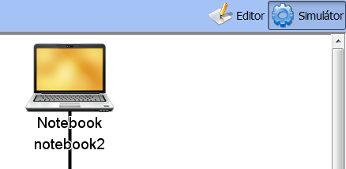
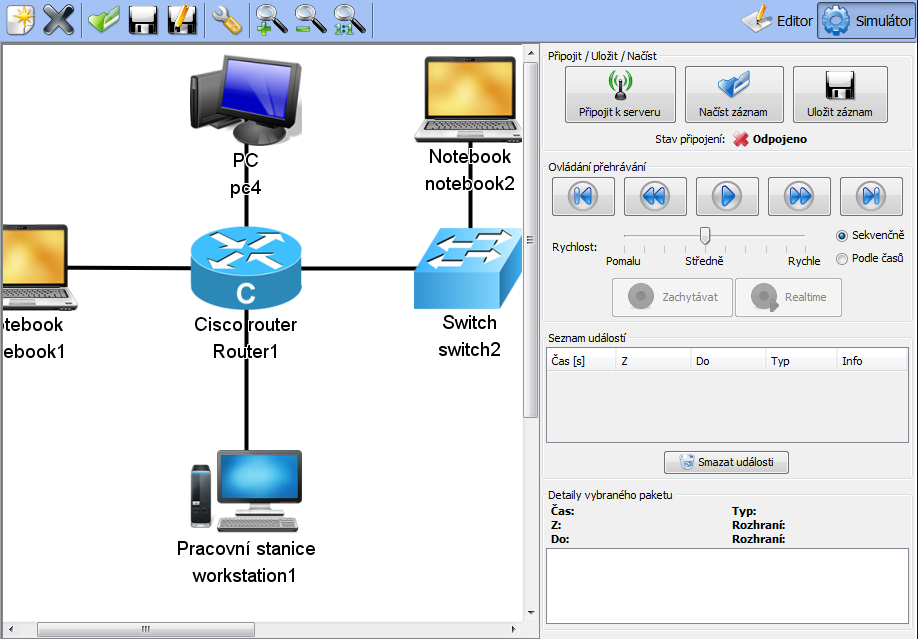

Tutorial 2: Simualční režim
- Simulační režim
- Připojení k simulátoru
- Příjem událostí, pohyb v seznamu
- Přehrávání událostí
- Uložení a načtení seznamu událostí
Simulační režim
Načtení dříve uložené sítě
Nejdříve načteme pomocí tlačítka Otevřít nějakou síť, například takovou:

Přepnutí do simulačního režimu
Poté se přepneme do simulačního režimu pomocí tlačítka vpravo nahoře (Simulátor):
Simulační režim
V simulačním režimu není možné dělat se sítí žádné úpravy. Je možné zoomovat a posouvat si celou síť v okně. Lišta s nástroji je schovaná a napravo je zobrazen Ovládací panel.
Další částí tutorialu je: Připojení k simulátoru.